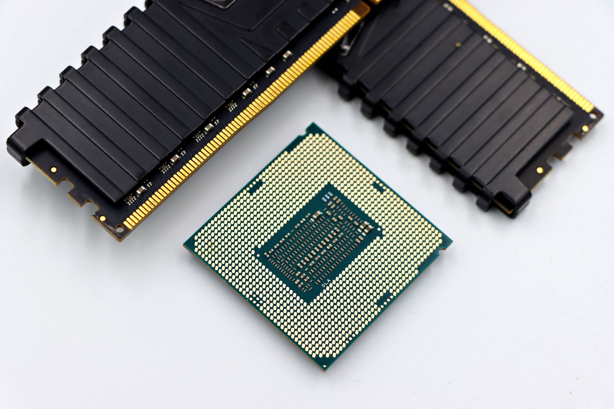

韓, 반도체 5년 생산 2배 목표…미국 AI 투자 유치가 관건

한국 정부는 2026~2030년 5개년 반도체 산업 계획에서 현재 반도체 생산 능력을 2배로 확대하는 목표를 설정하고, 미국 팹리스·AI 인프라 기업으로부터 직접 투자 유치를 공식 추진하기로 했다. 용인 반도체 클러스터(총 투자 규모 약 300조 원)가 핵심 거점으로 지목됐다.
미중 정상회담에서 첨단 반도체 수출통제 완화 합의가 재차 불발됐다. 이는 엔비디아의 중국향 H20 판매 차단이 유지된다는 의미이며, 화웨이·CXMT 등 중국 팹의 HBM 자체 조달 경로도 봉쇄된 상태가 지속된다. 삼성전자와 SK하이닉스의 중국 매출 비중은 각각 2022년 28%에서 현재 약 12%로 축소됐다.
East Asia Forum 분석에 따르면 한국 반도체의 실질적 성장 제약은 기술 역량이 아닌 시장 접근성 결핍에서 온다. 미국 반도체 장비(어플라이드 머티리얼즈·램리서치·KLA 3사 합산 한국 팹 공급 비중 약 65%)에 대한 구조적 의존과 중국 시장 규제가 동시에 작동하면서 투자 대비 수익 기반이 좁아지고 있다.
한국 정부가 미국 AI 투자 유치를 강조하는 배경에는 엔비디아·AMD·인텔 등 미국 팹리스 기업의 파운드리·HBM 주문을 안정적으로 흡수하려는 계산이 있다. 현재 SK하이닉스는 엔비디아 HBM3E 공급의 약 50~60%를 담당하고 있으며, 이 비율을 HBM4 세대에서도 유지하는 것이 5개년 계획의 실질 전제 조건이다.
한국의 '반도체 생산 2배' 선언이 의미 있으려면 수요처가 확보돼야 한다. 중국 시장이 닫힌 상태에서 미국 AI 인프라 투자 사이클이 5년 이상 지속되지 않으면, 증설된 생산 능력은 가동률 하락으로 귀결된다. 핵심 변수는 미국 AI 데이터센터 투자의 지속 기간이다.
미중 기술 격리 구도의 고착은 한국에게 '중국 시장 손실'과 '미국 의존 심화'를 동시에 강제한다. 한국이 전략적 균형자를 자처하더라도 실제 장비·기술 표준이 미국 중심으로 묶여 있는 한, 자율적 공급망 구축에는 구조적 한계가 있다.
SK하이닉스는 엔비디아 HBM 독점 공급 구도에서 직접적 수혜를 받는다. HBM4 양산 일정(2025년 말~2026년 초)이 예정대로 진행될 경우, 연간 HBM 매출이 현재 약 15조 원에서 2027년 25조 원 이상으로 확대될 전망이다.
용인 클러스터 주변 소부장 기업군(SEMES·원익IPS·하나머티리얼즈 등)은 삼성전자·하이닉스의 증설 투자 직접 수혜권에 있다. 300조 원 클러스터 투자 중 소부장·장비 발주 비중이 약 30~35%로 추산되면 90~105조 원 규모의 국내 발주가 5~10년에 걸쳐 집행된다.
중국 파운드리·메모리 업체(CXMT·YMTC)는 미국 장비 접근이 차단된 상태에서 한국과의 기술 격차가 다시 벌어지고 있다. 미중 갈등이 없었다면 2~3년 내 한국 턱밑까지 추격했을 것이라는 분석이 한국 반도체연구원 인터뷰에서 나왔다.
삼성전자는 파운드리 점유율이 TSMC 대비 약 60% p 이상 뒤처진 상태에서, HBM 수율 논란과 파업 리스크가 겹치며 미국 팹리스 고객사로부터의 신뢰 회복이 최대 과제로 부상했다. 2025년 파운드리 시장 점유율은 약 13%로 2022년 15%에서 오히려 하락했다.
국내 소부장 기업은 용인 클러스터 발주 일정(삼성전자 P4 라인 2027년 가동 예정)을 기준으로 인증 일정을 역산해야 한다. TSMC·인텔 인증과 달리 삼성전자 내부 퀄 프로세스는 평균 18~24개월이 소요되므로, 2027년 공급을 목표로 한다면 지금 바로 퀄 신청을 시작해야 한다.
투자자 관점에서 이 5개년 계획의 실현 가능성을 검증하는 단일 지표는 SK하이닉스의 HBM4 수율이다. 엔비디아가 HBM4를 탑재한 B300 시리즈 칩 출하를 2026년 하반기로 계획하고 있어, 그 이전에 SK하이닉스 HBM4 초도 생산 수율이 공개 재무 지표에 반영된다.
실제 조달 현장에서는 — 미국 팹리스 구매팀이 한국산 메모리를 평가할 때 기술 스펙만큼이나 공급망 리스크 등급을 중요하게 본다. 최근 들어 주요 미국 고객사들이 '단일 공급자 의존 비율 30% 초과 금지' 내부 정책을 강화하고 있어, 한국 메모리 업체들도 제2 소부장 공급선 확보를 공식 서류로 증명해야 하는 상황이 늘고 있다.
이 포스팅은 쿠팡 파트너스 활동의 일환으로 수수료를 제공받습니다.